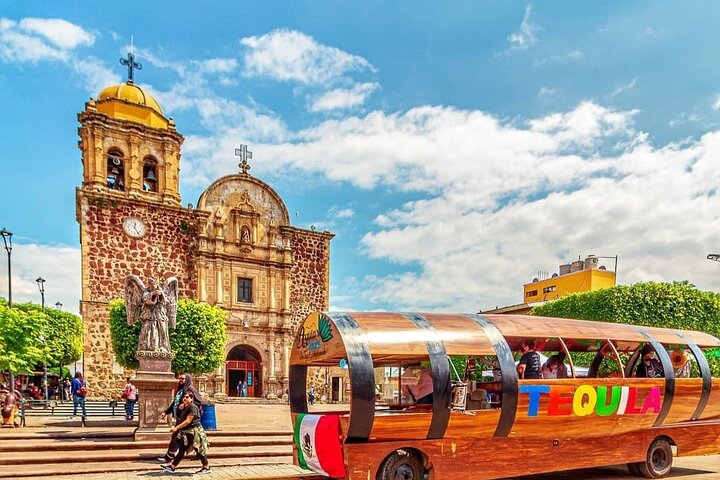

Tours más solicitados
Explora lo mejor de Guadalajara con los tours favoritos
Tequila
Esta tierra del oro azul se levanta a las faldas del volcán de Tequila y el cañón del Río Grande, entre el paisaje de los cultivos de agave, las antiguas haciendas y las destilerías que fabrican la deliciosa bebida emblema de México
Puerto vallarta
Puerto Vallarta es el más importante destino turístico del estado de Jalisco, situado en la costa del Pacífico mexicano. Ofrece a sus visitantes una amplia variedad de atracciones y atractivos naturales, hermosas playas y una abundante oferta artística y cultural.

Centro de Guadalajara
El Centro Histórico de Guadalajara es un barrio de la capital del estado de Jalisco. Allí se fundó la ciudad el 14 de febrero de 1542 y se construyó la primera iglesia.

Mazamitla
Es un Pueblo Mágico enclavado en el corazón de la Sierra del Tigre, un lugar lleno de historia, tradición, magia y ensueño que te invita a vivir experiencias inolvidables en una de las poblaciones más emblemáticas y tradicionales en el occidente del país.